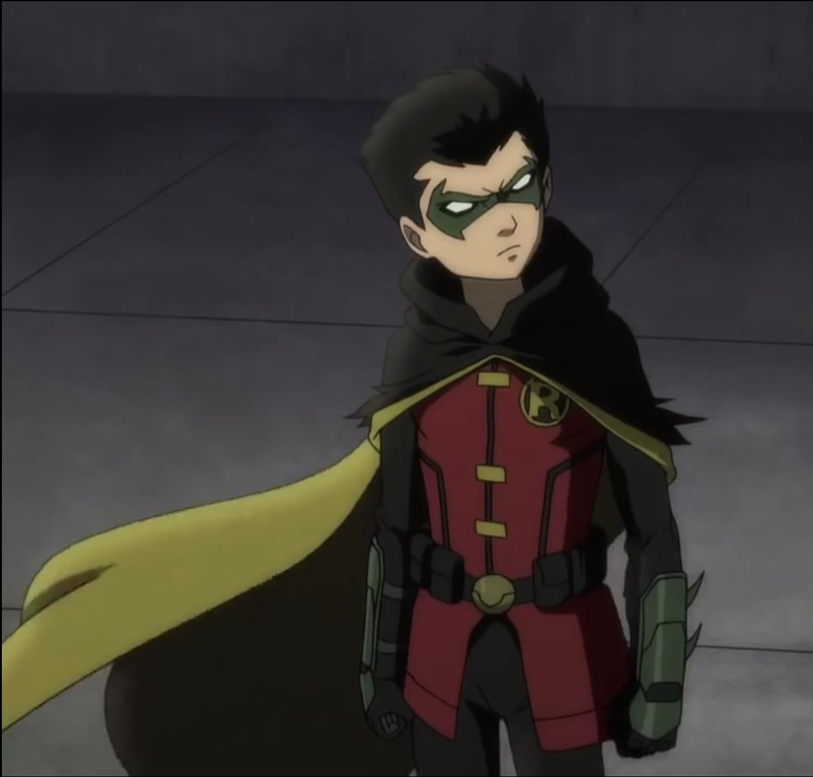

Menú Autobiografía Pasatiempos Canciones Favoritas Peliculas Favoritas Páginas
Mi nombre es Miranda del Carmen Uc Peña y tengo 17 años edad, actualmente estoy cursando mi último semestre de preparatoria en el Colegio de Bachilleres del Estado de Yucatán en el plantel de la ciudad de Umán Me gusta mucho el leer es uno de mis pasatiempos favoritos desde hace años ya que desde que iba a secundaria juntaba mi dinero para comprarme algunos libros que quería sobre todo los que son de tragedia donde muera algún personaje principal, también me gusta escuchar música sobre todo cuando estoy trabajando en cosas de escuela porque me relaja ya que estar en completo silencio me estresa y desespera, amo ver doramas asiáticos al igual que ver anime y leer manga, mis historias favoritas son las que tienen finales trágicos porque nos hacen ver cómo es la vida en realidad, me encantan los animales sobre todo cuando están chiquitos porque son muy adorables. Me gusta cocinar postres en especial el pan de zanahoria ya que es mi postre favorito, y el postre que casi no me gusta es el pastel ya que no me gusta para nada el chantilly que tiene porque no me gusta su sabor y si como pastel solamente como el pan y dejo el chantilly en el plato. Mi estación favorita es invierno porque me gusta el frio y lo prefiero por mucho que el calor ya que me abrigo y se calma el frio, y al contrario odio el calor ya que es casi imposible calmarlo si no estás en un lugar con aire, me encantan las flores, pero hay unas que en verdad me gustarían conocer que son las de cerezo, pero lamentablemente no hay en mi estado por el tipo de tierra así que mientras me conformó el verlas en imágenes.
Amo a los niños pequeños me son muy adorables, pero yo siendo sincera soy el tipo de persona que no quiere tener hijos en el futuro ya que soy una persona que quiere disfrutar más el viajar, tener mi casa y auto y trabajar para así disfrutar de la vida con tiempo suficiente incluso el llegar a conocer diferentes países del mundo y conocer nuevas culturas. La carrera que quiero estudiar es turismo porque es la combinación de las cosas que me gustan como la comunicación que es algo que me gusta ya que soy accesible a conocer a nuevas personas de manera rápida, la historia que es mi asignatura favorita desde que estaba en secundaria y los idiomas porque siempre me dio curiosidad otros idiomas en especial por los acentos que tienen, por esos el turismo es todo lo que me gusta relacionado de una manera.
°1.Escuchar musica °2.Leer libros °3.Ver doramas asiaticos °4.Ver redes sociales °5.Chatear con mis amigos
°My time °I´m Not Cool °How You Like That °Hijo de la Luna °Flavor Of Life °Everytime We Touch °Fantastic °Hero °Idol °I Need To Know
°La Leyenda del Jinete sin Cabeza °El hijo de Batman °Son como niños °Orgullo y Prejuicio °El Grich °Mujeres al ataque °Shrek
Regresar al MenúTIC IV Ecología Estructura Socioeconnomica de México Derecho II Administración II ITM UADY COBAY